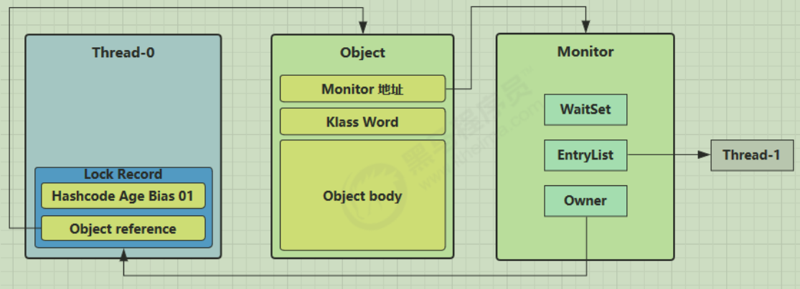

并发编程
基础的概念
什么是并发操作？
利用多核CPU去完成任务，类似于使用影分身去完成不同的作业，这肯定比我一个人一个个写要快的多
什么时候可以使用并发？
当有多核CPU时。如果只有一个CPU，那并发实际上只是线程的不断切换，好比我在数学作业上先写点儿，再到语文上再写点儿，因为处理的很快，给人的感觉是同时操作的。但实际上只会比原来更慢(因为有线程切换的损耗)。
如何使用并发编程？
public class BasicLearn {
public static void main(String[] args) {
new Thread(new A()).start();
new Thread(new FutureTask<String>(new B())).start();
new C().start();
}
}
// 无返回值
class A implements Runnable {
@Override
public void run() {}
}
// 有返回值
class B implements Callable<String> {
@Override
public String call() throws Exception {
return " a ";
}
}
class C extends Thread {
@Override
public void run() {}
}- 实现Runnable或Callable接口，从写run方法。
- 继承Thread类，从写run方法
实现Runnable 和 继承Thread有什么区别
- Java是单继承结构，如果继承Thread，无法继承其他的类，接口更灵活
- 继承Thread开销会大一些，如果我们只要求可运行
线程的分类
普通线程，就是我们上面所讲的内容
守护线程，也叫做
Daemon，当所有非守护线程结束后，守护线程就会被回收。比如说垃圾回收就是守护线程- 注意守护线程不能操作重要的数据，因为无法保证可以执行完后，守护线程才停止。
线程的状态
- New ：创建好，但还未启动
- Runable ：Runable本身是两个状态，一个是Runable表示等待CPU时间片的线程，一个是Running表示正在使用时间片的线程
- Blocked ：阻塞住的线程
- Waiting ：一直等待线程，直到被唤醒
- Time Waiting ：有时间的等待，到时间自己醒了
- terminted ：线程结束
线程的中断
听起来线程的中断有点儿像人家正好好干活，你突然把人家赶走了。但实际上是这个线程在 Blocked 或 Waiting 时，我们将其打断，让他别等了。
我们常用：interrupt() 来打断线程，打断后会抛出 InterruptedException，从而提前结束该线程。但是不能中断 I/O 阻塞和 synchronized 锁阻塞。也是比较好判断的就是你看方法的调用是否有InterruptedException,如果有说明可以被打断。
如果该线程好好干活，我们是无法将其打断的。调用 interrupt()，只会是将其内部状态作为修改，通过 interrupted() 我们可以看这个线程是否被打断过，在 while（true）中我们可以通过使用 interrupted() 来判断是否跳出循环
在使用 Executor 去管理多个线程任务时，有方法 shutdown() 和 shutdownNow()，区别是 shutdown() 是等所有线程执行完后进行结束。而shutdownNow()表示现在就可以结束了。
多线程的缺点
一旦涉及到多线程，总是面临着数据安全的问题，如果一组操作没有原子性，那在多线程的情况下就会出现数据安全的问题。所以为了数据的安全性，我们引出了锁的概念，线程去抢同一把锁，谁抢到了谁去操作数据，其他人就在外面等着（阻塞），直到锁被之前持有的线程释放。锁的实现分为很多种，我们下面会介绍。
线程各个操作导致的状态
这里我们常在使用锁的情况下来描述，比方说多个线程抢同一把锁，如果使用 Thread.sleep() 或 Thread.yield() 是否会放回锁。
// 线程进入Runable，但未释放锁资源
Thread.yield();
// 线程进入TIMED_WAITING，但未释放锁资源
Thread.sleep();
// 线程进入Waiting状态，释放锁资源
objectLock.wait();
// 底层实际用的wait(), 释放锁资源
Thread.join();这里有个小问题：
objectLock.notify() 与 objectLock.notifyall()有什么区别？
notify是释放一个线程去抢锁，notifyall是释放所有等待的去抢锁，但只有一个能抢到。这看起来感觉不到区别。
实际上每个对象底层有两个池：锁池 和 等待池
- 在锁池的是阻塞状态，当锁被释放，所有在锁池的对象都有机会获得锁
- 在等待池的是等待状态，是没有资格去抢锁的，只能被人唤醒
当A线程抢到锁后，B线程没抢到就进入了锁池，A线程虽然抢到了，但如果是需要的资源没到位，使用了wait，进入的是等待池。这时候B就可以获取锁，并执行业务了，但A因为在等待池，所以即便是锁没被占用，自己仍无法操作，直到被唤醒。
notify() 是将等待池的一个线程加入锁池，而notifyall() 是将等待池中的所有线程加入锁池。
当一个线程需要等待另一个线程的资源
public class start {
public synchronized static void main(String[] args) throws InterruptedException {
Object objectLock = new Object();
objectLock.wait();
objectLock.notify();
ReentrantLock reentrantLock = new ReentrantLock();
Condition condition = reentrantLock.newCondition();
condition.wait();
condition.signalAll();
LockSupport.park();
LockSupport.unpark(Thread.currentThread());
}
}比如我们主线程需要等待一个启动线程返回的结果，我们可以直接使用Thread.join(),等待该线程将资源返回，但这种方式必须要等到线程结束，主线程才能去获取，非常不灵活。因此我们常使用 Object.wait() 与 Object.notify() 方法可以更加主动的去等待与被通知。但有什么缺陷呢？
- 必须在静态代码块儿中使用，负责会抛出异常，这一点在
condition.wait() 与condition.signal()也存在 - 必须先
wait() 再 notify()否则会报错，因此我们常用：LockSupport.park();
LockSupport.park(); 底层使用的Unsafe类，它是可以操作线程和内存的，所以说不安全，要规范使用，在Atomic类中底层调用的也是它。而且它不能被直接获取，只能通过反射来获取。
class UnsafeAccessor {
static Unsafe unsafe;
static {
try {
Field theUnsafe = Unsafe.class.getDeclaredField("theUnsafe");
theUnsafe.setAccessible(true);
unsafe = (Unsafe) theUnsafe.get(null);
} catch (NoSuchFieldException | IllegalAccessException e) {
throw new Error(e);
}
}
static Unsafe getUnsafe() {
return unsafe;
}
}Volatile
这里设计线程的工作内存与主内存数据的交互，为什么有工作内存，就是因为CPU对寄存器的操作远远超出了对内存的操作，所以线程是工作内存拷贝主内存，来使得CPU操作工作内存更快速，
可见性
多个线程操作同一份数据，如果在A线程中对被Volatile修饰的对象做修改后，其他线程是可以立刻知道的。
有序性
禁止指令重排，指令重排是一种计算机运行代码的优化手段，但可能造成奇怪的bug
原子性（具有误导性）
Java 内存模型保证了 read、load、use、assign、store、write、lock 和 unlock 操作具有原子性，例如对一个 int 类型的变量执行 assign 赋值操作，这个操作就是原子性的。 Java 内存模型允许虚拟机将没有被 volatile 修饰的 64 位数据（long，double）的读写操作划分为两次 32 位的操作来进行，即 load、store、read 和 write 操作可以不具备原子性。
被Volatile修饰过的对象，在多线程下只能保证可见性，但不保证操作的原子性

活锁，死锁，哲学家问题
活锁： 两个线程互相影响彼此依赖的变量
public class TestLiveLock {
static volatile int count = 10;static final Object lock = new Object();
public static void main(String[] args) {
new Thread(() -> {
// 期望减到 0 退出循环
while (count > 0) {
sleep(0.2);
count--;
log.debug("count: {}", count);
}
}, "t1").start();
new Thread(() -> {
// 期望超过 20 退出循环
while (count < 20) {
sleep(0.2);
count++;
log.debug("count: {}", count);
}
}, "t2").start();
}
}死锁：程序需要获取两把锁才能向下执行，两个线程各拿到了一把锁，等待另一把，导致双方都进入阻塞。
哲学家问题就是死锁问题的一种形式。
进阶知识
Monitor
Java对象头
普通对象：
数组对象：
其中Mark Wordd的内部结构（32位虚拟机）
64位虚拟机
Object lock = new Object();
synchronized (lock) {}当synchronized 对对象加入重量级锁时，Mark Work中就会有指向Monitor对象的指针，下面我们看看Monitor的结构
WaitSet 就是等待队列
EntryList 就是阻塞队列
Owner 就是当前获取锁的线程
锁优化
自旋锁
以前线程没有抢到锁，就会直接进入阻塞队列，但这代价太大了，所以JDK1.6后，因为了自旋锁，也就是抢不到锁后，没立刻阻塞，而是继续尝试获取锁，最后实在不行，就阻塞，因为也占用CPU资源。尝试几次是看之前获取几次来判断的，这也是自适应自旋锁的一个特点。
自旋会占用CPU，所以单核CPU自旋就是浪费，只有多核CPU才能提高性能
锁消除
通过逃逸分析，发现一个虽然加锁了，但实际上数据是无法被外界影响的，就会把锁消除。
锁粗化
对一个对象反复的加锁解锁，性能影响很大，如果虚拟机探测到由这样的一串零碎的操作都对同一个对象加锁，将会把加锁的范围扩展（粗化）到整个操作序列的外部。
轻量级锁
- 对使用者透明：
synchronized - 多线程访问的时间是错开的，可用轻量级锁来优化
static final Object obj = new Object();
public static void method1() {
synchronized( obj ) {
// 同步块 A
method2();
}
}
public static void method2() {
synchronized( obj ) {
// 同步块 B
}
}- 当遇到加锁操作时，线程的栈帧中会创建一个（Lock Record）对象，每个线程的栈帧都会包含一个锁记录的解耦，内部存放锁定对象的Mark Word
让锁记录中 Object reference 指向锁对象，并尝试用 cas 替换 Object 的 Mark Word，将 Mark Word 的值存入锁记录。
- 如果成功说明，锁当前没有被占用，01 代表无锁，00代表轻量级锁，对象头中存储了 锁记录地址和状态 00 ，表示由该线程给对象加锁
- 如果失败说明，有竞争，进入锁膨胀过程
- 如果发现有竞争，但是可以通过Mark Word 判断加锁的线程是不是自己，如果是自己，则再添加一个Lock Record作为重入计数
当退出 synchronized 代码块（解锁时）如果有取值为 null 的锁记录，表示有重入，这时重置锁记录，表示重入计数减一。
当退出 synchronized 代码块（解锁时）锁记录的值不为 null，这时使用 cas 将 Mark Word 的值恢复给对象头
成功，则解锁成功
失败，说明轻量级锁进行了锁膨胀或已经升级为重量级锁，进入重量级锁解锁流程
锁膨胀
当发现线程竞争发生了直接冲突时，就会将Object中MarkWork指向Monitor，并且将状态改为10。10就是重量级锁。阻塞线程就进入Monitor的EntryList进行阻塞。
当持有轻量级锁的线程进行cas操作时，发现失败了，就说明现在已经是重量级锁了，则通过Monitor地址找到Monitor对象，将Owner设置为空，表示锁释放，然后通知EntryList阻塞线程唤醒。

偏向锁
偏向锁是对轻量级锁的再次优化，之前使用轻量级锁方案时，每次获取锁都要和Object的对象头做CAS操作，即便是重入锁，也需要该操作。现在希望Object对象头上直接写占有锁的线程ID，这样只要比较，不进行CAS操作。
查看对象头的信息
<dependency>
<groupId>org.openjdk.jol</groupId>
<artifactId>jol-core</artifactId>
<version>0.16</version>
// 这里需要注意，不用provided
<scope>compile</scope>
</dependency>public class start {
public synchronized static void main(String[] args) throws InterruptedException {
Object o = new Object();
// 0x0000000000000001
System.err.println(ClassLayout.parseInstance(o).toPrintable());
Thread.sleep(4000);
// 延迟显示，不延迟：-XX:BiasedLockingStartupDelay=0
System.err.println(ClassLayout.parseInstance(o).toPrintable());
}
}适用范围：锁竞争少。
如果是多线程竞争，可以设置关闭偏向锁，默认是开启的，适用：-XX:-UseBiasedLocking
需要注意：当使用了对象的.hashcode()方法会变为不可偏向
因为在偏向锁中对象头没有位置存储HashCode，所以转为轻量级锁或者重量级锁。每个对象最初的HashCode为0，第一次使用时，进行赋值。
线程安全的集合类
这里分为三类
遗留的：HashTable（Map），Vector（List）
使用 Collections 装饰的线程安全集合，如：Collections.synchronizedCollection，可以将线程不安全的集合包装为线程安全的，底层实际上就是方法调用时包装类对原先方法加锁。
JUC包下的类